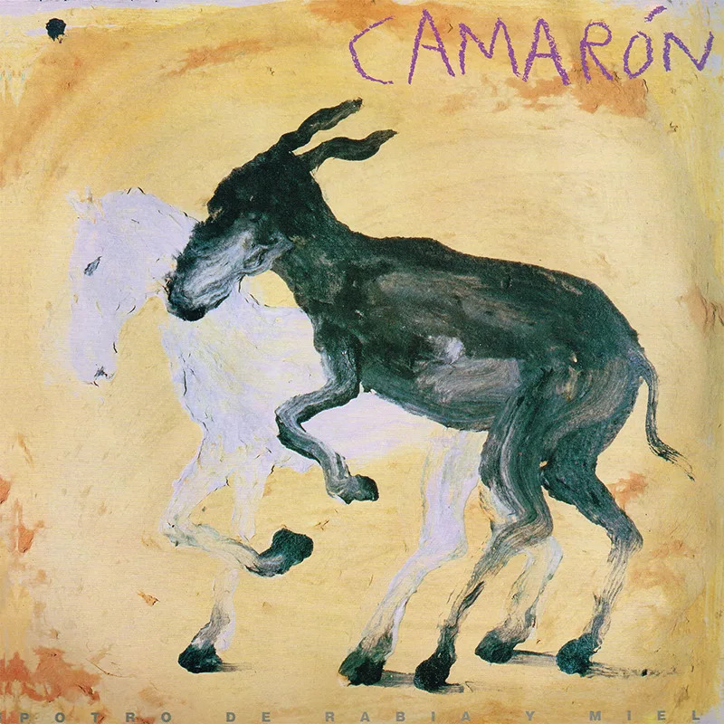
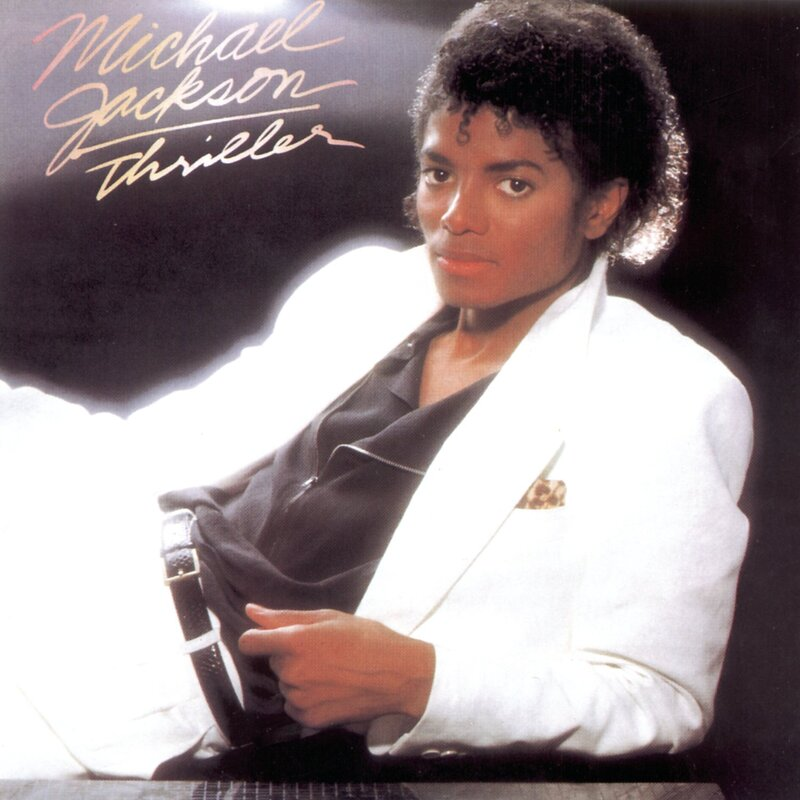

Potro De Rabia Y Miel

Ficha Técnica
- Artista: Camarón de la Isla
- Estilo: Flamenco
- Fecha de lanzamiento: 1992
Comentario:
Un disco imprescindible del flamenco

Un disco imprescindible del flamenco

El inconfundible disco del Rey del Pop.
Disco del maestro de la guitarra flamenca, Paco de Lucía.
Un clásico del gangsta rap y el hip hop.